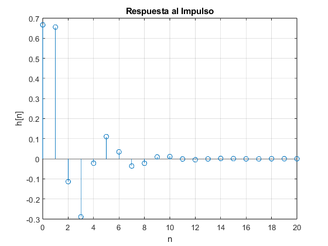
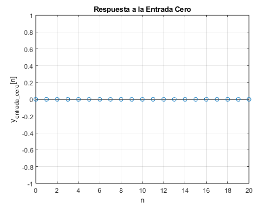
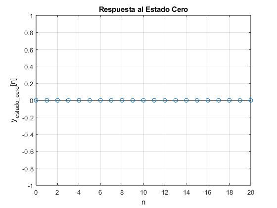
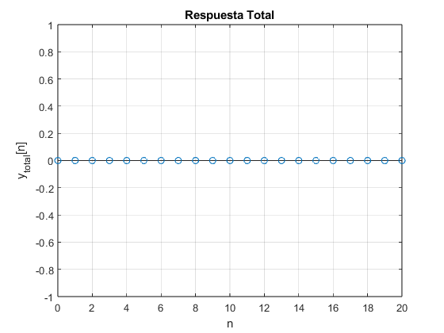
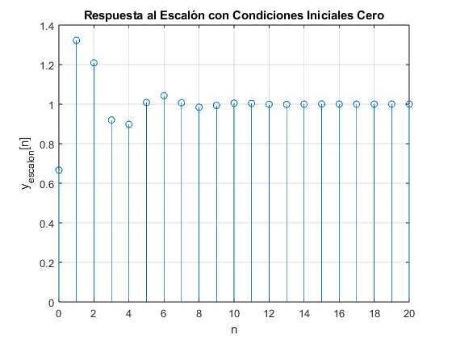

%%SISTEMAS DIFERENCIALES clc; clear; close all; % Parámetros del sistema num = [2 1.5]; % Numerador de la función de transferencia den = [3 -0.7 1.2]; % Denominador de la función de transferencia
Crear la función de transferencia
sys = tf(num, den, -1, 'Variable', 'z^-1');
Mostrar la función de transferencia
disp('Función de transferencia del sistema:');
sys;
Función de transferencia del sistema:
Obtener la respuesta al impulso
[h, t] = impz(num, den);
disp('Respuesta al impulso (h[n]):');
disp(h');
Respuesta al impulso (h[n]):
Columns 1 through 7
0.6667 0.6556 -0.1137 -0.2888 -0.0219 0.1104 0.0345
Columns 8 through 14
-0.0361 -0.0222 0.0093 0.0111 -0.0011 -0.0047 -0.0006
Columns 15 through 21
0.0017 0.0007 -0.0005 -0.0004 0.0001 0.0002 -0.0000
Graficar la respuesta al impulso
figure; stem(t, h); title('Respuesta al Impulso'); xlabel('n'); ylabel('h[n]'); grid on;
Obtener la respuesta a la entrada cero (y[n] = 0)
n = length(h); % número de muestras u = zeros(1, n); % entrada cero y_entrada_cero = filter(num, den, u); disp('Respuesta a la entrada cero (y_entrada_cero[n]):'); disp(y_entrada_cero);
Respuesta a la entrada cero (y_entrada_cero[n]):
Columns 1 through 13
0 0 0 0 0 0 0 0 0 0 0 0 0
Columns 14 through 21
0 0 0 0 0 0 0 0
Graficar la respuesta a la entrada cero
figure; stem(t, y_entrada_cero); title('Respuesta a la Entrada Cero'); xlabel('n'); ylabel('y_{entrada\_cero}[n]'); grid on;
Obtener la respuesta al estado cero (y[n] con x(0)=0)
x0 = zeros(1, max(length(num), length(den))-1); % condiciones iniciales y_estado_cero = filter(num, den, u, x0); disp('Respuesta al estado cero (y_estado_cero[n]):'); disp(y_estado_cero);
Respuesta al estado cero (y_estado_cero[n]):
Columns 1 through 13
0 0 0 0 0 0 0 0 0 0 0 0 0
Columns 14 through 21
0 0 0 0 0 0 0 0
Graficar la respuesta al estado cero
figure; stem(t, y_estado_cero); title('Respuesta al Estado Cero'); xlabel('n'); ylabel('y_{estado\_cero}[n]'); grid on;
Obtener la respuesta total (combinar impulso y entrada cero)
y_total = y_entrada_cero + y_estado_cero;
disp('Respuesta Total (y_total[n]):');
disp(y_total);
Respuesta Total (y_total[n]):
Columns 1 through 13
0 0 0 0 0 0 0 0 0 0 0 0 0
Columns 14 through 21
0 0 0 0 0 0 0 0
Graficar la respuesta total
figure; stem(t, y_total); title('Respuesta Total'); xlabel('n'); ylabel('y_{total}[n]'); grid on;
Obtener la respuesta total al escalón con condiciones iniciales cero
u_escalon = ones(1, n); % entrada escalón y_escalon = filter(num, den, u_escalon); disp('Respuesta al Escalón con Condiciones Iniciales Cero (y_escalon[n]):'); disp(y_escalon);
Respuesta al Escalón con Condiciones Iniciales Cero (y_escalon[n]):
Columns 1 through 7
0.6667 1.3222 1.2085 0.9198 0.8979 1.0083 1.0428
Columns 8 through 14
1.0067 0.9844 0.9937 1.0048 1.0036 0.9989 0.9983
Columns 15 through 21
1.0000 1.0007 1.0001 0.9998 0.9999 1.0001 1.0001
Graficar la respuesta total al escalón con condiciones iniciales cero
figure; stem(t, y_escalon); title('Respuesta al Escalón con Condiciones Iniciales Cero'); xlabel('n'); ylabel('y_{escalon}[n]'); grid on;
Mostrar todas las respuestas simbólicas
syms z Hz = poly2sym(num, z) / poly2sym(den, z); disp('Función de transferencia simbólica H(z):'); pretty(Hz)
Función de transferencia simbólica H(z):
3
2 z + -
2
--------------
2 7 z 6
3 z - --- + -
10 5
disp('Respuesta simbólica al impulso:');
h_sym = iztrans(Hz);
pretty(h_sym)
Respuesta simbólica al impulso:
n n / / / 7 sqrt(10) \ \ \
(-1) 12 cos| n | pi - acos| ---------- | | | 40
5 kroneckerDelta(n, 0) \ \ \ 120 / / /
---------------------- + -------------------------------------------------
4 n
7 (6 sqrt(10))
n 1 - n / 7 \n - 1
(-1) 30 sqrt(1391) | - #1 - - | 45i
\ 2 /
+ ----------------------------------------------
749
n 1 - n / 7 \n - 1
(-1) 30 sqrt(1391) | #1 - - | 45i
\ 2 /
- --------------------------------------------
749
where
sqrt(1391) 1i
#1 == -------------
2
disp('Respuesta simbólica al escalón:');
u_sym = 1/(1-z^-1);
y_escalon_sym = iztrans(Hz * u_sym);
pretty(y_escalon_sym)
Respuesta simbólica al escalón:
n 1 - n / 7 \n - 1
(-1) 30 sqrt(1391) | - #1 - - | 12i
\ 2 /
1 - ----------------------------------------------
749
n 1 - n / 7 \n - 1
(-1) 30 sqrt(1391) | #1 - - | 12i
\ 2 /
+ --------------------------------------------
749
n n / / / 7 sqrt(10) \ \ \
(-1) 12 cos| n | pi - acos| ---------- | | | 20
\ \ \ 120 / / /
- -------------------------------------------------
n
7 (6 sqrt(10))
where
sqrt(1391) 1i
#1 == -------------
2